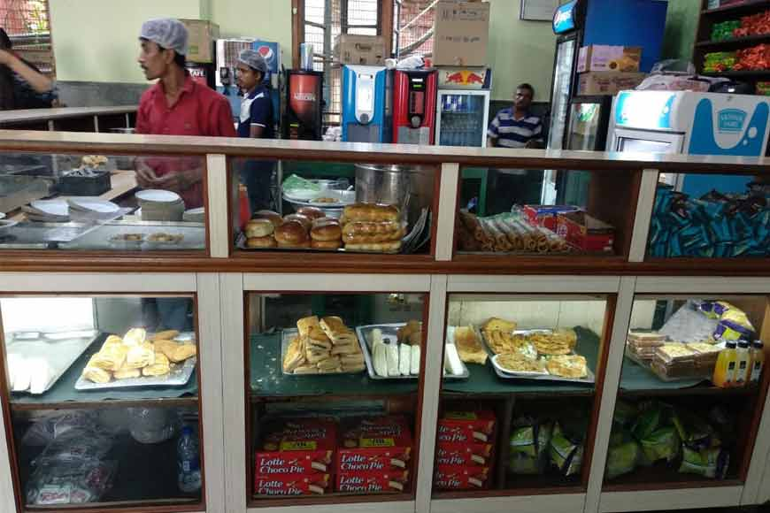

A Christian Minority Higher Educational Institution, St. Xavier’s was founded in 1860 by a Catholic Minority Religious body, the Society of Jesus, and was affiliated to Calcutta University in 1862. While preference is shown to the educational and cultural needs of the Minority community, admission is open to all irrespective of caste, creed and nationality! St. Xavier’s College offers UG and PG courses under five faculties : Arts, Science, Commerce, Business Administration, and Education. It also offers various professional certificate and diploma courses under Career Oriented Programmes and Computer Centre. St. Xavier’s offers Ph.d in Physics, Biotechnology, Microbiology and Commerce.
Acheivements
Won the ‘Outstanding Paper’ award in the Regional Science and Technology Congress (Southern Region), held in December, 2018, and qualified for the final level of State Science and Technology Congress.
Won the ‘Outstanding Paper’ award in the 26th West Bengal State Science and Technology Congress, 2019, held on 1st March, 2019, at Science City, Kolkata. The original research work was entitled as- Low Cost Arsenic Mitigation Strategy in Paddy Cultivation using Plant-Microbe Interaction, co-authored with Dr. Arup Kumar Mitra, Dr. Sudeshna Shyam Choudhury and Dr. Madhumita Maitra.
What's new
New School Canteen

Describe the canteen here
For all Xavierians, food was never scarce during their college days. Not just because this iconic college is on the hip and happening Park Street of Kolkata, surrounded by equally historic food joints, some of which are running from the British era, but because the college has a very well-stocked canteen. For those who feel going to joints next door like Flurys, might burn a hole in their pockets, they can always pay a visit to the St Xavier’s Canteen, housed within the building itself and open almost throughout the day, from 8am in the morning.